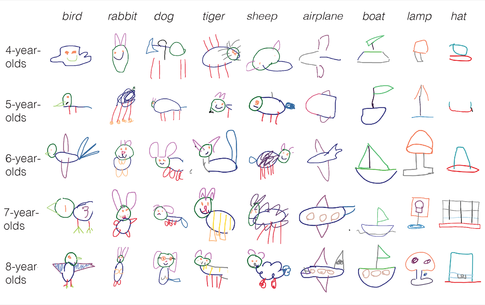
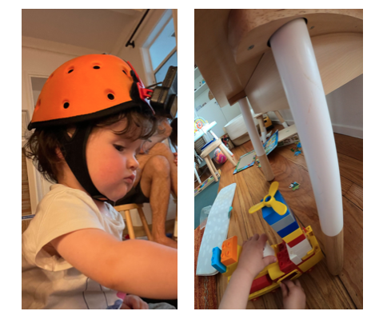
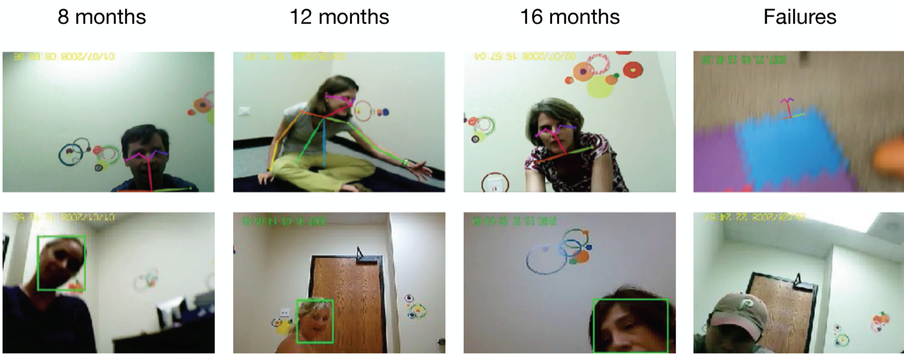
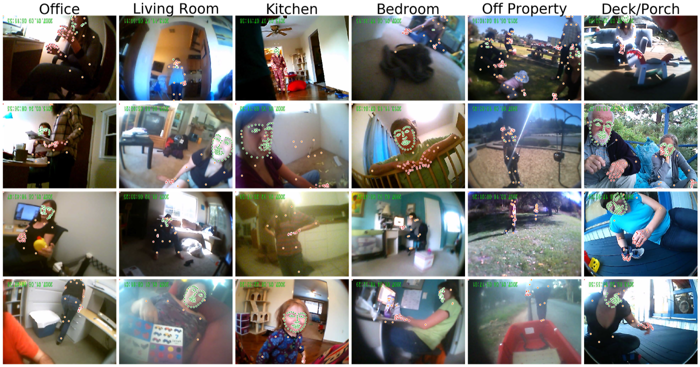
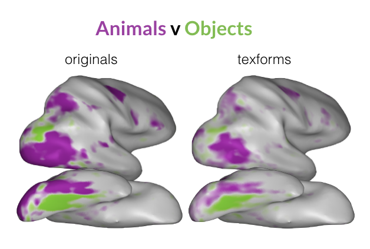
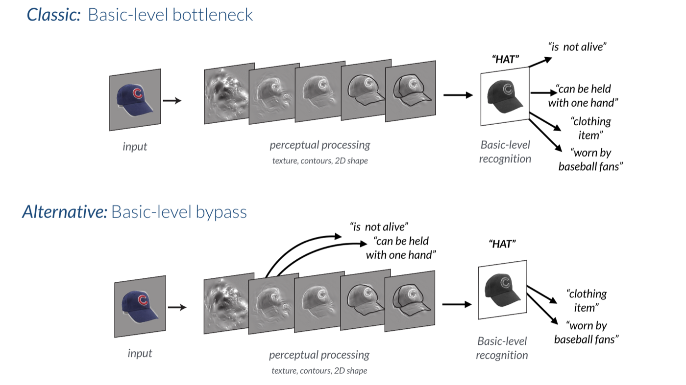

Research
How we learn to derive meaning from what we see

Visual concepts across childhood
In modern times, almost all children learn to draw and are prolific producers of drawings throughout childhood. Yet consider how much effort it takes to actually “draw a tiger” – one has to both access the mental representation of “a tiger” and then communicate this via a few well-placed strokes. What might children’s drawings reveal about how they represent the visual concepts in the world around them? For this project, I collected over 37, 000 digital children’s drawings behaviors via an iPad interface, and analyzed the category-diagnostic information in these drawings using both embeddings from deep neural networks and human annotations of the recognizable object parts in each stroke. We find that children not only change in their ability to include category-diagnostic information in their drawings but also to use this information when trying to recognize other children's drawings Taken together, this line of work suggests that gradual changes in visual concepts knowledge are reflected in children's ability to produce and recognize line drawings of visual concepts.
Preprints & Papers
Long, B., Fan, J.E., Huey, H., Chai, Z., & Frank, M. C. (2024). Parallel developmental changes in children's production and recognition of line drawings of visual concepts. Nature Communications. open access repository
Long, B., Wang, Y., Christie, S., Frank, M. C., & Fan, J.E. (2023). Developmental changes in drawing production under different memory demands in a U.S. and Chinese sample. Developmental Psychology. pdf repository
Related conference proceedings
Huey*, H., Long*, B., Yang, J., George, K., and Fan, J. (2022). Developmental changes in the semantic part structure of drawn objects. Proceedings of the 44th Annual Meeting of the Cognitive Science Society. pdf repository
Long, B., Fan, J., Chai, Z., & Frank, M. C. (2019). Developmental changes in the ability to draw distinctive features of object categories. Proceedings of the 41st Annual Conference of the Cognitive Science Society. pdf repository
Long, B., Fan, J. E., Frank, M. C. (2018). Drawings as a window into developmental changes in object representations. Proceedings of the 40th Annual Meeting of the Cognitive Science Society pdf poster
Press & Outreach
Latest recorded talks & tweets
Talk as panelist at CogSci '22 Images2Symbols workshop
2021 Tweet thread here
NeurIRPS SVHRM 2020 Talk Recording



What do babies see as they learn?
What are the statistics of infants' visual experience, and how does infants' view of the world change as they go from sitting to crawling (or scooting) to walking? What are the social cues that they see (e.g., presence of faces or hands), and how is this different across individuals in at-home vs. in-lab environments? Finally, what kinds of constraints do these statistics put on models of category and word learning?
This line of work records and analyzes videos taken from the infant perspective with modern computer vision models, aiming to understand the natural structure in the visual input and how this structure scaffolds early learning. We're also developing new cameras with better view angles and higher resolution (see example participant -- my son -- and photo to the left!). By understanding children's early learning environments, we can build more mechanistic models of how learning unfolds in everyday contexts.
Papers & Conference Proceedings
Sepuri, T.*, Loong Aw, K.*, Tan, A. W. M.*, Sparks, R. Z., Marchman, V.A., Frank, M.C., Long, B. (2025) Characterizing young children’s everyday activities using video question-answering models. NeurIPS DBM Workshop. open access*denotes joint first-authorship,
Yang, J., Sepuri, T., Tan, A., Frank, M. C., & Long, B. (2025). Quantifying infants’ everyday experiences with objects in a large corpus of egocentric videos. Proceedings of Cognitive Computational Neuroscience Conference 2025. open access
Long, B.*, Sparks, R. Z.*, Xiang, V.*, Stojanov, S.*, Yin, Z., Keene, G. E., Nag, A., Zhuang, C., Marchman, V., Yamins, D.L.K., & Frank, M.C. (2025). The BabyView dataset: High-resolution egocentric videos of infants' and young children's everyday experiences. Proceedings of Cognitive Computational Neuroscience Conference 2025 (8 page track) open access *equal contributions
Long, B., Goodin, S., Kachergis, G., Marchman, V., Radwan, S., Sparks, R., Xiang, V., Zhuang, C., Hsu, O., Newman, B., Yamins, D.L.K., Frank M.C. (2023). The BabyView Camera: Designing a new head-mounted camera to capture children’s early social and visual environment. Behavioral Research Methods. pdf repository
Long, B., Kachergis, G., Agrawal, K., & Frank, M. C. (2022).A longitudinal analysis of the social information in infants' naturalistic visual experience using automated detections. Developmental Psychology. pdf repository
Long, B., Sanchez, A., Kraus, A. M., Agrawal, K., & Frank, M. C. (2022). Automated detections reveal the social information in the changing infant view. Child Development. pdf repository
Long, B., Kachergis, G., & Naiti, B., & Frank, M. C. (2021). Characterizing the object categories two children see and interact with in a dense dataset of naturalistic visual experience. Proceedings of the 43nd Annual Conference of the Cognitive Science Society. repository pdf



Meaning from mid-level features
One might intuit that we need to recognize what a depicted object is before we know whether it is alive or how big or small it is in the real-world. However, in a series of studies we have found that there are common mid-level features that characterize animals, small objects (e.g., cups, pens) and big objects (e.g., cars, couches). As a result, we still have expectations about the animacy and real-world size of unrecognizable “texforms” – textures that preserve the coarse form of an object. These unrecognizable texforms can also automatically trigger real-world size processing -- suggesting that basic-level recognition is not always a gateway to real-world size processing. Most recently, we have found that these features also elicit animacy and size responses in ventral visual cortex.
Broadly, this line of work asks when mid-level features are sufficient for cognitive and neural processes that seem to rely on recognition.

For more, see
Long, B., Yu., C.P., & Konkle, T. (2018). Mid-level visual features explain the high-level categorical organization of the ventral stream. Proceedings of the National Academy of Sciences. pdf repository
Long, B. & Konkle, T. (2017). A familiar Size-Stroop effect in the absence of basic-level recognition. Cognition. pdf
Long, B., Störmer, V.S., & Alvarez, G.A. (2017). Mid-level perceptual features contain early cues to animacy. Journal of Vision. ( open access
Long, B., Konkle, T., Cohen, M.A., & Alvarez, G.A. (2016). Mid-level perceptual features distinguish objects of different real-world sizes. Journal of Experimental Psychology: General. pdf

Developing representations of animacy and object size
How do we learn which bundles of visual features describe "animals", or that objects that are big in the real-world tend to be boxy? I've started asking this question by transforming the same psychophysical paradigms we use with adults (e.g., visual search, Stroop paradigms) for preschoolers. Our current work suggests that preschoolers show the same signatures of animacy and object size representations in these tasks -- hinting that their perceptual representations are somewhat adult-like, and pointing towards an earlier developmental trajectory. We’ve also found some preliminary evidence that even one-year-olds seem to process the real-world sizes of depicted objects.
Long, B., Moher, M., Carey, S. E., & Konkle, T. (2019). Animacy and object size are reflected in perceptual similarity computations by the preschool years. Visual Cognition, 1-17. repository pdf
Long, B., Moher, M., Carey, S., & Konkle, T. (2019). Real-world size is automatically encoded in preschoolers’ object representations. Journal of Experimental Psychology: Human Perception and Performance repository pdf
Long, B., Carey, S., & Konkle, T. (2016). Pre-verbal infants automatically activate real-world object size information. Poster presented at the annual meeting of the Vision Sciences Society. pdf

Earlier work
Before my graduate work at Harvard, I spent two years in France working at Laboratoire de Sciences Cognitives et Psycholinguistic at École Normale Supérieure, earning a Masters degree.
For my master's thesis, I examined the neural processes that underlie infant’s ability to form new expectations about what will happen next. In this work, we used EEG to show that infants rapidly learned cross-modal statistical regularities (e.g., an arbitrary tone predicted that a flower would soon appear), and found that these regularities influenced both infants’ initial processing and ongoing processing of these visual events.
I also spent a few years interested in cross-linguistic effects. During a yearlong Fulbright fellowship at ENS, I investigated phonological processing in infants, learning how to use NIRS (near infrared-spectroscopy) to measure neural processing in 14-month-olds. As an undergraduate, I was interested in the relationship between language and cognition: my earliest work found that Japanese and English speakers remember the agents of intentional and accidental events differently.
Publications
Kouider, S., Long, B., Le Stanc, L., Barbosa, L.S., Fievet, A.C., & Gelskov, S. (2015). Neural dynamics of prediction and surprise in infants. Nature Communications, 6.
Minagawa-Kawai, Y., Cristia, A., Long, B., Vendelin, I., Hakuno, Y., Dutat, M., Filippin, L., Cabrol, D., and & Dupoux, E. (2013). Insights on NIRS sensitivity from a cross-linguistic study on the emergence of phonological grammar. Frontiers in Psychology
Fausey, C., Long, B., Inamori, A., & Boroditsky, L. (2010). Constructing agency: the role of language. Frontiers in Cultural Psychology.